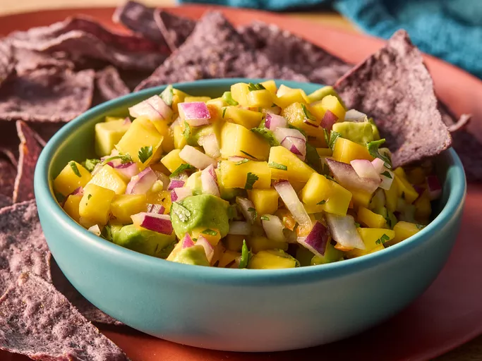

Home
Avocado Mango Salsa

Description
This mango avocado salsa with habaneros is sweet, hot, and tangy! Great with chips for a summer appetizer or a side for grilled pork, chicken, or fish.
Ingredients
- 1 avocado - peeled, pitted and diced
- 1 lime, juiced
- 1 mango - peeled, seeded and diced
- 1 small red onion, chopped
- 1 habanero chile pepper, seeded and chopped
- 1 tablespoon chopped fresh cilantro
- salt to taste
Steps
- Gather all ingredients.
- Place avocado in a serving bowl and mix with lime juice.
- Add mango, onion, habanero, cilantro, and salt; toss until evenly combined.
- Enjoy!